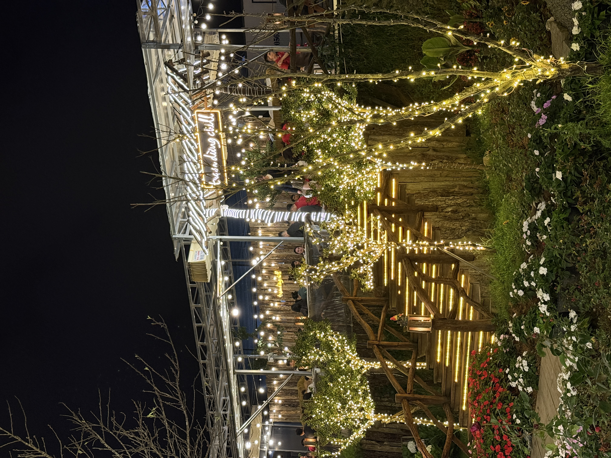

Ga xe lửa Đà Lạt — Di sản kiến trúc
Ga xe lửa Đà Lạt được xây năm 1932, kiến trúc Art Deco độc đáo, là ga xe lửa cổ đẹp nhất Đông Dương. Tuyến Đà Lạt - Trại Mát dài 7km vẫn hoạt động phục vụ du lịch. Đoàn tàu cổ kính chạy qua thung lũng, cánh đồng hoa và nhà lồng — tạo nên cảnh đẹp mê hồn.
Quán nướng gần ga xe lửa
1. Trạm Dừng Chill: Đây là quán nướng duy nhất có view trực tiếp xe lửa chạy ngang dưới chân quán! Tuyến đường sắt Đà Lạt - Trại Mát chạy qua đúng khu vực phía dưới, tạo nên trải nghiệm nướng BBQ ngắm tàu cổ kính "1 không 2". Đặt bàn view xe lửa →

2. Quán Nướng Đường Tàu: Gần ga Đà Lạt, phong cách vintage.

3. BBQ Station Đà Lạt: Trang trí theo concept ga tàu, gần khu vực đường ray.
Giờ tàu chạy — Đừng bỏ lỡ!
Tàu từ ga Đà Lạt đi Trại Mát: 7:45, 9:50, 11:55, 14:00, 16:05. Tàu về: sau 30 phút. Chuyến 16:05 là thời điểm đẹp nhất vì trùng với hoàng hôn. Tại Trạm Dừng Chill, bạn sẽ thấy tàu chạy ngang vào khoảng 16:20-16:30 — khoảnh khắc check-in triệu like!
Trải nghiệm kết hợp: Đi tàu + Ăn nướng
Gợi ý lịch trình hoàn hảo: Sáng đi tàu Đà Lạt - Trại Mát (vé 150K), tham quan chùa Linh Phước. Chiều về, ghé Trạm Dừng Chill nướng BBQ ngắm chính đoàn tàu đó chạy ngang dưới chân quán!
Kết luận
Quán nướng view xe lửa Đà Lạt là trải nghiệm độc đáo chỉ có ở phố núi. Trạm Dừng Chill — nơi duy nhất ngắm tàu chạy ngang khi đang nướng! Đặt bàn →